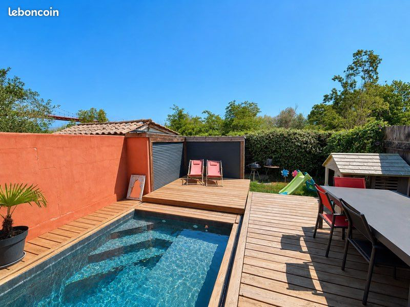

Maison T4 avec parking jardin et piscine - Bordeaux Maritime
2 Rue du Cardinal Feltin, Bassins à flot / Bacalan, à 100 m de l'arrêt Tram B Claveau, quartier Bordeaux Maritime, Bordeaux 33300

Informations
- Statut
- Terminé
- Adresse
- 2 Rue du Cardinal Feltin, Bassins à flot / Bacalan, à 100 m de l'arrêt Tram B Claveau, quartier Bordeaux Maritime, Bordeaux 33300
- Bien
- Maison T4 avec parking jardin et piscine
- Année
- 1981
- Exposition
- Sud-Est
- Taxe foncière
- 1 500 €
- Vendeur
- Laura
- Téléphone
- +33 6 66 00 71 88
- Date
- 2026-06-01
Description
Évolutions
| Date | Modifications |
|---|---|
| 2026-06-01 | Depuis la version Notion visitée le 2025-08-05 : URL Leboncoin 3009463267 -> 3161620404 ; prix 319500 -> 299000 ; surface 90 -> 85 ; localisation précisée avec Rue du Cardinal Feltin + proximité Tram B Claveau ; statut Notion : Pas intéressant -> à étudier |
Aménagez au cœur de Bacalan dans une maison lumineuse, entièrement rénovée, au calme, à deux pas du tram et de toutes les commodités.
Les plus
- Quartier en plein essor, à 100m de l'arrêt de tram Claveau, proche commodités (boulangerie, supérette, médecin, pharmacie, écoles, crèche, Cité Bleue et Halles de Bacalan), à 20min en tram du centre historique de Bordeaux
- Confort: rénovation complète, excellente luminosité, poêle à bois, maison clé en main
- Extérieurs: double jardin, terrasse sans vis-à-vis orientée sud-est, piscine sécurisée, place de parking privative + prise pour voiture électrique.
- Economique et performances: classe énergie C, classe climat A.
Rez-de-chaussée
- Entrée avec rangements
- WC indépendant
- Grande pièce de vie de plus de 40 m² avec cuisine équipée, ouverte sur le jardin grâce à de larges baies esprit verrière pour une sensation dedans/dehors toute l'année.
Salon avec poêle à bois qui chauffe entièrement la maison, idéal pour les soirées d’hiver.
Étage
- Suite parentale avec dressing
- Chambre avec placard intégré
- Chambre modulable avec lit double en mezzanine sur mesure (actuelle chambre d’amis/salle de jeux)
Extérieurs
Côté rue: jardin d’accueil, rangement vélos, place de parking privative, prise pour véhicule électrique.
Côté sud-est: jardin/terrasse sans vis-à-vis, rangements, superbe piscine sous terrasse coulissante pour une sécurité optimale et un gain d’espace.
Contactez-moi pour organiser une visite.
Agence s’abstenir - nous souhaitons vendre exclusivement de particulier à particulier